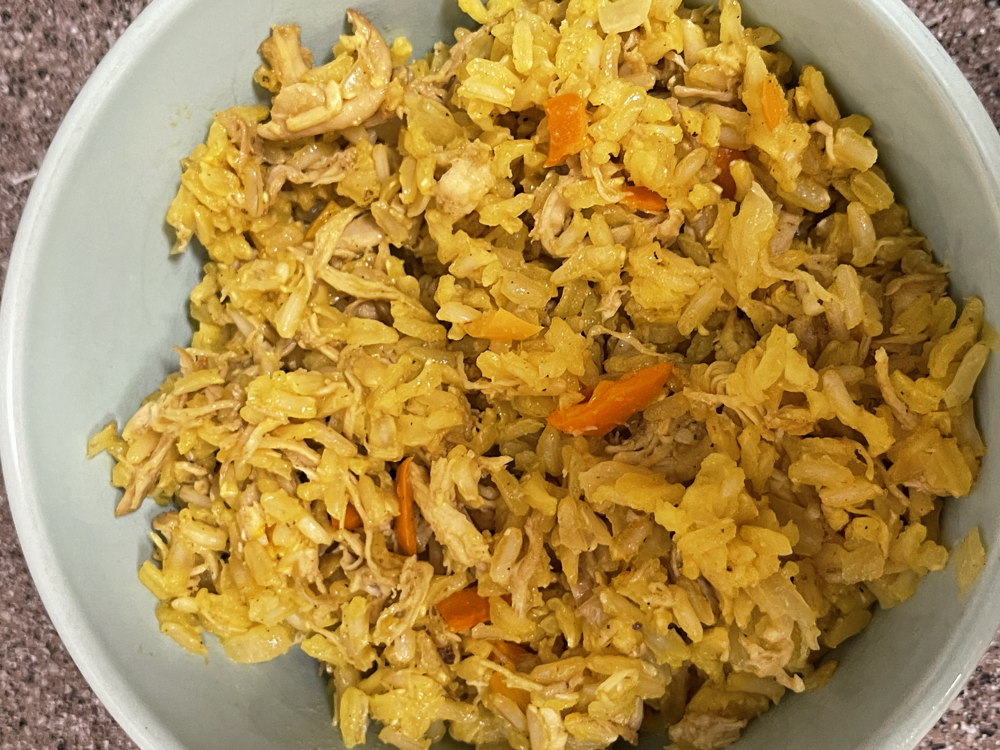

Home
Arroz Con Pollo

A grandpa classic.
¿Necesita más sabor no? Puedes añadir otras cosas si quieres.
Ingredients
baked or store bought rotisserie chicken
1 diced (large) white onion.
1 diced bell pepper.
1 garlic clove, minced
olive oil
1 pinch of saffron
4 cups water
2 cups brown rice
vinegar
Steps
Cook the chicken. (Skip if store bought). Take off the legs,
we won't need them. Set aside a bone and a large piece of skin for
the rice.
In a large pot, boil 4 cups water then add 2 cups rice with a pinch of saffron,
the chicken bone and the chicken skin.
Coat a large frypan with olive oil and cook the diced onion and
bell peppers until they are soft.
Add in the garlic. Less than three minutes cook time
to avoid burning it.
After the rice is cooked, remove the bone and chicken skin.
Mix the chicken and vegetables.
Serve rice per plate.
Salt and vinegar to taste.